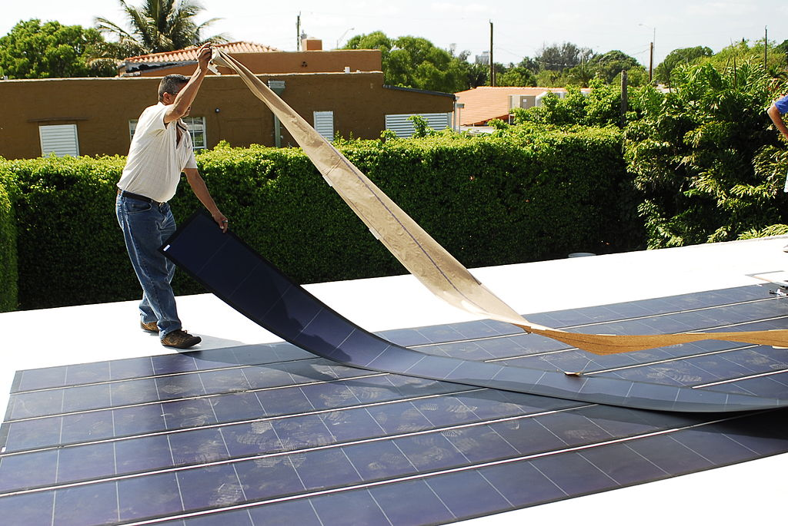

Explanation & Funcions
As already said, these photovoltaic cells are really thin. So thin in fact, that they are less that 0.1 milimeters thick and weigh 0.1 kilograms per square meter. But how is that achieved? With a special production method.
The paper thin solar cells are actually not a new technology. Six years ago, the ONE Lab produced simular cells. They were also thin, but the materials themselves were more expensive and the process to create them was very complex and expensive. This changes now.
The production process and materials now are first of all much cheaper and second of all much better to execute and scale up. They now developed solar cells that are completely printable and ink-based materials. Here is how they did it:
Here is a visualisation of it so you can understand it better:
One lightweight fabric they found worked perfectly is the Dyneema a composite fabric that weighs only 13 grams per square meter. It makes the solar cells more durable, while still keeping it lightweight and flexible. It is commonly used for offshore activities like in cables and nets when fishing or when climbing, since it's also used in climbing equipment.
To not interfere with the efficiency of the solar cells, they don't print the solar cells directly on the fabric, but instead use a UV-curable glue, to stick the solar modules to sheets of the fabric.
During the testing, the MIT researchers found that the device could produce 730 watts of power per kilogram when not attached to anything. When it was placed on the strong Dyneema fabric, it still managed to generate about 370 watts per kilogram. This is a significant improvement compared to regular solar cells, which only generate a fraction of that power per kilogram.
And if we for example say that the average typical solar installation on a rooftop generates about 8.000 watts, the superthin cells would only at 20 kilograms to the roof, instead of the roughly 300 kilograms normal solar cells would add!
Here is the impressive differance between normal cells and the extra thin ones:
| Power Output (Watts) | Regular PV Cells Weight (kg) | Paper-thin PV Cells Weight (kg) |
|---|---|---|
| 1000 | 37.5 | 2.5 |
| 2000 | 75 | 5 |
| 4000 | 150 | 10 |
| 6000 | 225 | 15 |
| 8000 | 300 | 20 |
| 10000 | 375 | 25 |
They also tested the durability of their devices and found that, even after rolling and unrolling a fabric solar panel more than 500 times, the cells still retained more than 90 percent of their initial power generation capabilities.
Well, firstly because this new technology was only discovered it in winter last year. But it's also not on the market or in mass production because they still need something to protect them from wind and weather.
“Encasing these solar cells in heavy glass, as is standard with the traditional silicon solar cells, would minimize the value of the present advancement, so the team is currently developing ultrathin packaging solutions that would only fractionally increase the weight of the present ultralight devices,” says Mwaura, a research scientist in the MIT Research Laboratory of Electronics.